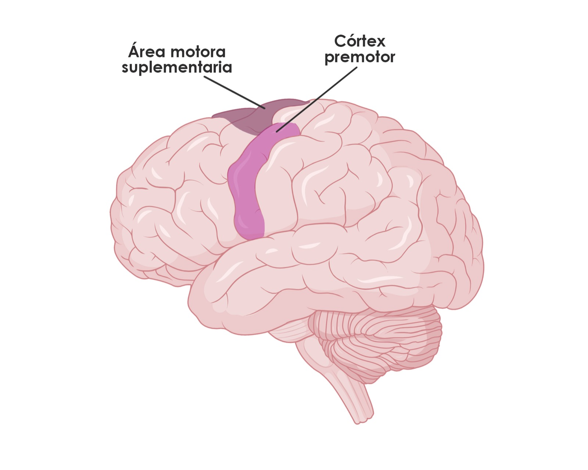
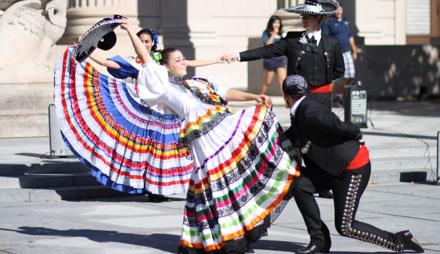

Cuando escuchamos una canción, es muy probable que esta nos evoque una sensación o emoción. Ya hemos hablado sobre la música y los procesos cerebrales subyacentes que se activan al empezar a escuchar una melodía. Cuando escuchamos música, le damos una interpretación abstracta y personal, lo que nos permite expresarnos de formas únicas.
Una de estas formas únicas es, precisamente, la danza. Actividad que comienza cuando percibimos emociones a partir de la música. En primera instancia, el proceso empieza con la activación del sistema nervioso autónomo, que genera una hormona de activación denominada adrenalina. La adrenalina suele activarse frente a una actividad que nos genera una emoción muy intensa. 
La danza es un arte. Sin duda, el baile es una forma de expresión que nos ha acompañado desde tiempos inmemorables. Y es que, su contribución en nuestras vidas pasa de ser una fuente de entretenimiento y canalización de emociones, hasta incluso llegar a cumplir un objetivo terapéutico. Pues bailar, involucra una serie de procesos cognitivos, emocionales, físicos y neuropsicológicos que potencian nuestro desarrollo general. Hoy, nos centraremos en las bases neuropsicológicas de la danza. La música y la danza Cuando escuchamos una canción, es muy probable que esta nos evoque una sensación o emoción. Ya hemos hablado sobre la música y los procesos cerebrales subyacentes que se activan al empezar a escuchar una melodía. Cuando escuchamos música, le damos una interpretación abstracta y personal, lo que nos permite expresarnos de formas únicas. 